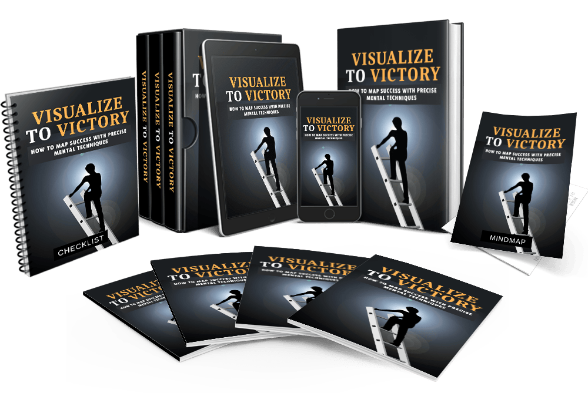

Top athletes, performers, entrepreneurs, and innovators all share one secret: they see their victories before they seize them.
✅ The Olympian runs the race thousands of times in their imagination before stepping onto the
track.
✅ The CEO visualizes the deal, the handshake, and the outcome before the first meeting.
✅ The musician rehearses every note in their mind until it feels like second nature.
Science backs it up: your brain can’t distinguish between vividly imagined experiences and real ones. Every time you picture success with detail and emotion, you’re rewiring your brain to expect it—and preparing your body to act accordingly.
But here’s the problem: most people misuse this power. They let their fears dominate the inner screen. They rehearse problems, pain, and doubt instead of outcomes, confidence, and victory.
That stops today.
It’s time to take control of your inner movie. It’s time to build a blueprint for your victory—one you can play on repeat until your success becomes inevitable.
Introducing...
How to Map Success with Precise Mental Techniques.

“Visualize To Victory” is the ultimate guide for those who want to harness the science of visualization, break free from mental barriers, and transform their inner vision into unstoppable external results.
This transformative blueprint imparts everything you need to know about rewiring your brain with mental imagery, crafting detailed victory blueprints, and building a mindset loop that keeps you moving forward — from harnessing neuroplasticity and practicing mental rehearsal to integrating the PICTURE Method for daily success… and many other invaluable insights.
Follow the steps taught in this powerful guide, and you’ll start noticing changes IMMEDIATELY.
If ready to stop replaying failures in your mind, start seeing your victories before they happen, and live every day in alignment with your vision…
Then, you owe it to yourself and everyone around you to learn the simple but powerful steps taught in ‘Visualize To Victory.’
Instead of charging this life-changing program at a ridiculous price, I am offering you a discount if you act right now:
$47.00
This discount is offered because I know how life-changing it is to start now, and the next time you face a high-stakes moment, you’ll already have “been there” in your mind.
If you’ve read up to this page….
I know that you are serious about unlocking the exact techniques that world-class achievers use daily.
You’re just a step away from experiencing a massive transformation.
All you have to do is implement the secrets revealed in this blueprint for the next 30 days...
…and if you don’t see any improvement in your life, simply return your order within 30 days and I will give you...
100% Money-Back Guarantee. No Questions Asked!
This checklist contains a step-by-step action plan to ensure you get the full benefits of Visualize To Victory.
By simply breaking one huge topic into easily digestible chunks, you get absolute clarity inclusive of easy-to-follow action steps!
This mind map is perfect for 'visual' learners. It outlines everything you are going to discover throughout the entire course.
With just a glance, you will have a clear picture of what to expect and absorb so much more than reading through Visualize To Victory by pages!
You get all the bonuses absolutely FREE only if you act today!